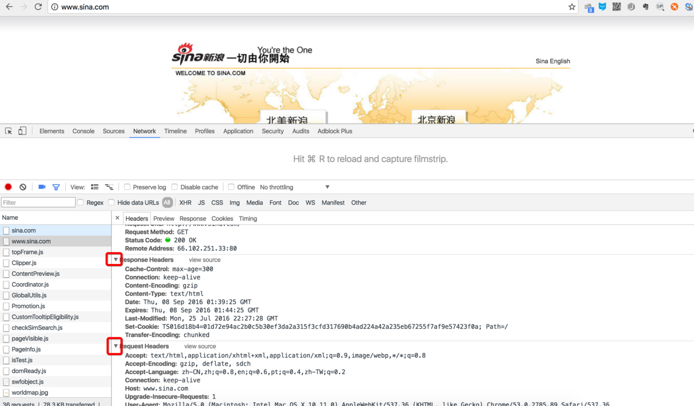
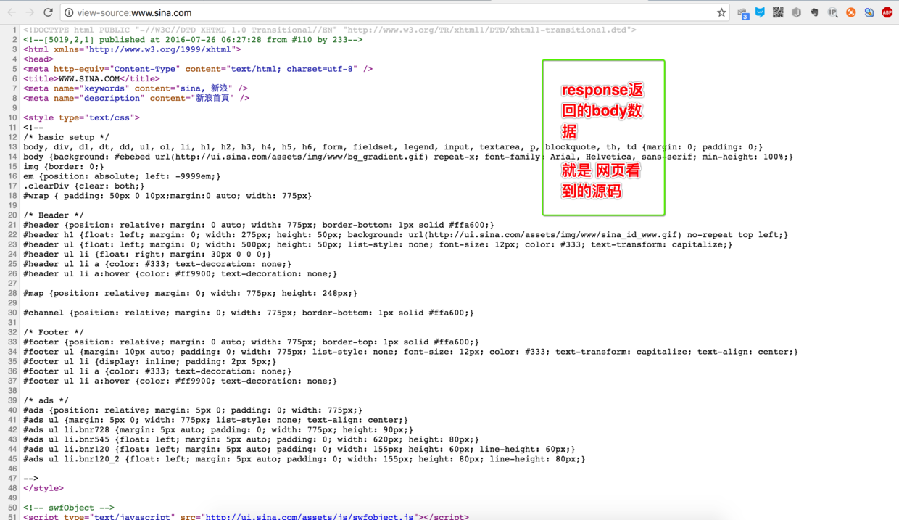
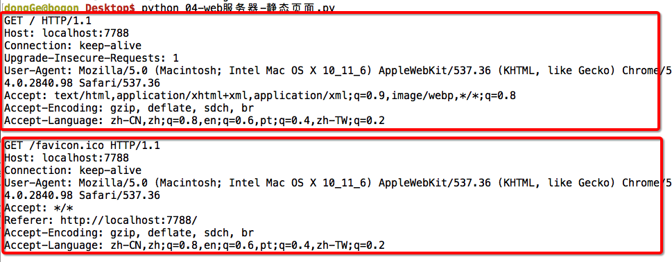

9.1. http协议¶
HTTP协议简介¶
1. 使用谷歌/火狐浏览器分析¶
在Web应用中，服务器把网页传给浏览器，实际上就是把网页的HTML代码发送给浏览器，让浏览器显示出来。而浏览器和服务器之间的传输协议是HTTP，所以：
-
HTML是一种用来定义网页的文本，会HTML，就可以编写网页；
-
HTTP是在网络上传输HTML的协议，用于浏览器和服务器的通信。
Chrome浏览器提供了一套完整地调试工具，非常适合Web开发。
安装好Chrome浏览器后，打开Chrome，在菜单中选择“视图”，“开发者”，“开发者工具”，就可以显示开发者工具：
说明¶
- Elements显示网页的结构
- Network显示浏览器和服务器的通信
我们点Network，确保第一个小红灯亮着，Chrome就会记录所有浏览器和服务器之间的通信：

2. http协议的分析¶
当我们在地址栏输入www.sina.com时，浏览器将显示新浪的首页。在这个过程中，浏览器都干了哪些事情呢？通过Network的记录，我们就可以知道。在Network中，找到www.sina.com那条记录，点击，右侧将显示Request Headers，点击右侧的view source，我们就可以看到浏览器发给新浪服务器的请求：
2.1 浏览器请求¶
说明¶
最主要的头两行分析如下，第一行：
1 | GET / HTTP/1.1 |
GET表示一个读取请求，将从服务器获得网页数据，/表示URL的路径，URL总是以/开头，/就表示首页，最后的HTTP/1.1指示采用的HTTP协议版本是1.1。目前HTTP协议的版本就是1.1，但是大部分服务器也支持1.0版本，主要区别在于1.1版本允许多个HTTP请求复用一个TCP连接，以加快传输速度。
从第二行开始，每一行都类似于Xxx: abcdefg：
1 | Host: www.sina.com |
表示请求的域名是www.sina.com。如果一台服务器有多个网站，服务器就需要通过Host来区分浏览器请求的是哪个网站。
2.2 服务器响应¶
继续往下找到Response Headers，点击view source，显示服务器返回的原始响应数据：
HTTP响应分为Header和Body两部分（Body是可选项），我们在Network中看到的Header最重要的几行如下：
1 | HTTP/1.1 200 OK |
200表示一个成功的响应，后面的OK是说明。
如果返回的不是200，那么往往有其他的功能，例如
- 失败的响应有404 Not Found：网页不存在
- 500 Internal Server Error：服务器内部出错
- ...等等...
1 | Content-Type: text/html |
Content-Type指示响应的内容，这里是text/html表示HTML网页。
请注意，浏览器就是依靠Content-Type来判断响应的内容是网页还是图片，是视频还是音乐。浏览器并不靠URL来判断响应的内容，所以，即使URL是
http://www.baidu.com/meimei.jpg，它也不一定就是图片。
HTTP响应的Body就是HTML源码，我们在菜单栏选择“视图”，“开发者”，“查看网页源码”就可以在浏览器中直接查看HTML源码：

浏览器解析过程¶
当浏览器读取到新浪首页的HTML源码后，它会解析HTML，显示页面，然后，根据HTML里面的各种链接，再发送HTTP请求给新浪服务器，拿到相应的图片、视频、Flash、JavaScript脚本、CSS等各种资源，最终显示出一个完整的页面。所以我们在Network下面能看到很多额外的HTTP请求。
3. 总结¶
3.1 HTTP请求¶
跟踪了新浪的首页，我们来总结一下HTTP请求的流程：
3.1.1 步骤1：浏览器首先向服务器发送HTTP请求，请求包括：¶
方法：GET还是POST，GET仅请求资源，POST会附带用户数据；
路径：/full/url/path；
域名：由Host头指定：Host: www.sina.com
以及其他相关的Header；
如果是POST，那么请求还包括一个Body，包含用户数据
3.1.1 步骤2：服务器向浏览器返回HTTP响应，响应包括：¶
响应代码：200表示成功，3xx表示重定向，4xx表示客户端发送的请求有错误，5xx表示服务器端处理时发生了错误；
响应类型：由Content-Type指定；
以及其他相关的Header；
通常服务器的HTTP响应会携带内容，也就是有一个Body，包含响应的内容，网页的HTML源码就在Body中。
3.1.1 步骤3：如果浏览器还需要继续向服务器请求其他资源，比如图片，就再次发出HTTP请求，重复步骤1、2。¶
Web采用的HTTP协议采用了非常简单的请求-响应模式，从而大大简化了开发。当我们编写一个页面时，我们只需要在HTTP请求中把HTML发送出去，不需要考虑如何附带图片、视频等，浏览器如果需要请求图片和视频，它会发送另一个HTTP请求，因此，一个HTTP请求只处理一个资源(此时就可以理解为TCP协议中的短连接，每个链接只获取一个资源，如需要多个就需要建立多个链接)
HTTP协议同时具备极强的扩展性，虽然浏览器请求的是http://www.sina.com的首页，但是新浪在HTML中可以链入其他服务器的资源，比如<img src="http://i1.sinaimg.cn/home/2013/1008/U8455P30DT20131008135420.png">，从而将请求压力分散到各个服务器上，并且，一个站点可以链接到其他站点，无数个站点互相链接起来，就形成了World Wide Web，简称WWW。
3.2 HTTP格式¶
每个HTTP请求和响应都遵循相同的格式，一个HTTP包含Header和Body两部分，其中Body是可选的。
HTTP协议是一种文本协议，所以，它的格式也非常简单。
3.2.1 HTTP GET请求的格式：¶
1 2 3 4 | GET /path HTTP/1.1
Header1: Value1
Header2: Value2
Header3: Value3
|
每个Header一行一个，换行符是\r\n。
3.2.2 HTTP POST请求的格式：¶
1 2 3 4 5 6 | POST /path HTTP/1.1
Header1: Value1
Header2: Value2
Header3: Value3
body data goes here...
|
当遇到连续两个\r\n(有一个空行)时，Header部分结束，后面的数据全部是Body。
3.2.3 HTTP响应的格式：¶
1 2 3 4 5 6 | 200 OK
Header1: Value1
Header2: Value2
Header3: Value3
body data goes here...
|
HTTP响应如果包含body，也是通过\r\n\r\n来分隔的。
请再次注意，Body的数据类型由Content-Type头来确定，如果是网页，Body就是文本，如果是图片，Body就是图片的二进制数据。
当存在Content-Encoding时，Body数据是被压缩的，最常见的压缩方式是gzip，所以，看到Content-Encoding: gzip时，需要将Body数据先解压缩，才能得到真正的数据。压缩的目的在于减少Body的大小，加快网络传输。
1 2 3 4 5 6 7 8 9 10 11 12 13 14 15 16 17 18 19 20 21 22 23 24 25 26 27 28 29 30 31 32 33 | 浏览器---->服务器发送的请求格式如下：
GET / HTTP/1.1 //请求的时候必须有
Host: 127.0.0.1:8080
Connection: keep-alive
Accept: text/html,application/xhtml+xml,application/xml;q=0.9,image/webp,*/*;q=0.8
Upgrade-Insecure-Requests: 1
User-Agent: Mozilla/5.0 (Windows NT 5.1) AppleWebKit/537.36 (KHTML, like Gecko) Chrome/49.0.2623.75 Safari/537.36
Accept-Encoding: gzip, deflate, sdch
Accept-Language: zh-CN,zh;q=0.8
服务器--->浏览器回送的数据格式如下:
HTTP/1.1 200 OK //返回必须要有
Bdpagetype: 1
Bdqid: 0xe87cb3f700023783
Bduserid: 0
Cache-Control: private
Connection: Keep-Alive
Content-Encoding: gzip
Content-Type: text/html; charset=utf-8
Cxy_all: baidu+55617f8533383cbe48d5d2b7dc84b7f0
Date: Fri, 20 Oct 2017 00:59:55 GMT
Expires: Fri, 20 Oct 2017 00:59:11 GMT
Server: BWS/1.1
Set-Cookie: BDSVRTM=0; path=/
Set-Cookie: BD_HOME=0; path=/
Set-Cookie: H_PS_PSSID=1463_21080_17001_20929; path=/; domain=.baidu.com
Strict-Transport-Security: max-age=172800
Vary: Accept-Encoding
X-Powered-By: HPHP
X-Ua-Compatible: IE=Edge,chrome=1
Transfer-Encoding: chunked
<h1>haha</h1> //这是返回的内容
|
9.2. Web静态服务器-1-显示固定的页面¶
Web静态服务器-1-显示固定的页面¶
1 2 3 4 5 6 7 8 9 10 11 12 13 14 15 16 17 18 19 20 21 22 23 24 25 26 27 28 29 30 31 32 33 34 35 36 37 | #coding=utf-8 import socket def handle_client(client_socket): "为一个客户端进行服务" recv_data = client_socket.recv(1024).decode("utf-8") request_header_lines = recv_data.splitlines() for line in request_header_lines: print(line) # 组织相应 头信息(header) response_headers = "HTTP/1.1 200 OK\r\n" # 200表示找到这个资源 response_headers += "\r\n" # 用一个空的行与body进行隔开 # 组织 内容(body) response_body = "hello world" response = response_headers + response_body client_socket.send(response.encode("utf-8")) client_socket.close() def main(): "作为程序的主控制入口" server_socket = socket.socket(socket.AF_INET, socket.SOCK_STREAM) # 设置当服务器先close 即服务器端4次挥手之后资源能够立即释放，这样就保证了，下次运行程序时 可以立即绑定7788端口 server_socket.setsockopt(socket.SOL_SOCKET, socket.SO_REUSEADDR, 1) server_socket.bind(("", 7788)) server_socket.listen(128) while True: client_socket, client_addr = server_socket.accept() handle_client(client_socket) if __name__ == "__main__": main() |
服务器端¶

客户端¶
手敲代码:
1 2 3 4 5 6 7 8 9 10 11 12 13 14 15 16 17 18 19 20 21 22 23 24 25 26 27 28 29 30 31 32 33 34 35 36 37 38 39 | # -*- coding: utf-8 -*- import socket def service_client(new_socket): """为客户端返回数据""" # 1.接收浏览器发送过来的请求,即http请求 # GET / HTTP/1.1 # .... request = new_socket.recv(1024) #接收客户端的数据 print(request) # 2.返回http格式的数据 # 2.1准备给浏览器发送的数据 --header response = "HTTP/1.1 200 OK\r\n" response +="\r\n" # 2.2 准备给浏览器发送的数据 --boday response += "hehe" new_socket.send(response.encode("gbk")) #数据的返回 #关闭套接字 new_socket.close() def main(): """用来进行整体的控制""" # 1.创建套接字 tcp_server_socket = socket.socket(socket.AF_INET,socket.SOCK_STREAM) #AF_INET ipv4 stream时流的意思 # 设置当服务器先close 即服务器端4次挥手之后资源能够立即释放，这样就保证了，下次运行程序时 可以立即绑定7890端口 server_socket.setsockopt(socket.SOL_SOCKET, socket.SO_REUSEADDR, 1) # 2. 绑定 tcp_server_socket.bind(("",7890)) #绑定默认的ip以及端口号 # 3. 变为监听套接字 tcp_server_socket.listen(128) while True: # 4. 等待新客户端的链接 new_socket,client_addr = tcp_server_socket.accept() # 5. 为这个客户端进行服务 service_client(new_socket) #将接收到的客户对象进行接收 # 关闭监听套接字 tcp_server_socket.close() if __name__ == "__main__": main() |
9.3. Web静态服务器-2-显示需要的页面¶
Web静态服务器-2-显示需要的页面¶
03-返回inde.html页面.py
1 2 3 4 5 6 7 8 9 10 11 12 13 14 15 16 17 18 19 20 21 22 23 24 25 26 27 28 29 30 31 32 33 34 35 36 37 38 39 40 41 42 43 44 45 46 47 48 49 50 51 52 53 54 55 56 57 | import socket def service_client(new_socket): """为这个客户端返回数据""" # 1. 接收浏览器发送过来的请求 ，即http请求 # GET / HTTP/1.1 # ..... request = new_socket.recv(1024) print(">>>"*50) print(request) # 2. 返回http格式的数据，给浏览器 # 2.1 准备发送给浏览器的数据---header response = "HTTP/1.1 200 OK\r\n" response += "\r\n" # 2.2 准备发送给浏览器的数据---boy # response += "hahahhah" f = open("./html/index.html", "rb") html_content = f.read() f.close() # 将response header发送给浏览器 new_socket.send(response.encode("utf-8")) # 将response body发送给浏览器 new_socket.send(html_content) # 关闭套接 new_socket.close() def main(): """用来完成整体的控制""" # 1. 创建套接字 tcp_server_socket = socket.socket(socket.AF_INET, socket.SOCK_STREAM) tcp_server_socket.setsockopt(socket.SOL_SOCKET, socket.SO_REUSEADDR, 1) # 2. 绑定 tcp_server_socket.bind(("", 7890)) # 3. 变为监听套接字 tcp_server_socket.listen(128) while True: # 4. 等待新客户端的链接 new_socket, client_addr = tcp_server_socket.accept() # 5. 为这个客户端服务 service_client(new_socket) # 关闭监听套接字 tcp_server_socket.close() if __name__ == "__main__": main() |
服务器端¶
客户端¶
04-根据用户的需求返回相应的页面.py
1 2 3 4 5 6 7 8 9 10 11 12 13 14 15 16 17 18 19 20 21 22 23 24 25 26 27 28 29 30 31 32 33 34 35 36 37 38 39 40 41 42 43 44 45 46 47 48 49 50 51 52 53 54 55 56 57 58 59 60 61 62 63 64 65 66 67 68 69 70 71 72 73 74 75 76 77 78 79 80 81 82 83 84 85 86 87 | import socket import re def service_client(new_socket): """为这个客户端返回数据""" # 1. 接收浏览器发送过来的请求 ，即http请求 # GET / HTTP/1.1 # ..... request = new_socket.recv(1024).decode("utf-8") #对接收的数据进行解码 # print(">>>"*50) # print(request) request_lines = request.splitlines() #将字符串每一行切割成一个字符串 print("") print(">"*20) print(request_lines) # GET /index.html HTTP/1.1 # get post put del file_name = "" ret = re.match(r"[^/]+(/[^ ]*)", request_lines[0]) #[^/]+匹配不是/有多个,[^ ]* 匹配非空格字符零个或多个 #如果匹配到了数据的话那么就使用这个数据 if ret: file_name = ret.group(1) # print("*"*50, file_name) if file_name == "/": file_name = "/index.html" # 2. 返回http格式的数据，给浏览器 #尝试打开这个文件 try: f = open("./html" + file_name, "rb") except: #try不能正常的执行就是说明没有这个文件的话就返回404 response = "HTTP/1.1 404 NOT FOUND\r\n" response += "\r\n" response += "------file not found-----" new_socket.send(response.encode("utf-8")) else: #else执行的条件是try能够正常执行 #finally是一定会执行 html_content = f.read() f.close() # 2.1 准备发送给浏览器的数据---header response = "HTTP/1.1 200 OK\r\n" response += "\r\n" # 2.2 准备发送给浏览器的数据---boy # response += "hahahhah" # 将response header发送给浏览器 new_socket.send(response.encode("utf-8")) # 将response body发送给浏览器 new_socket.send(html_content) # 关闭套接 new_socket.close() def main(): """用来完成整体的控制""" # 1. 创建套接字 tcp_server_socket = socket.socket(socket.AF_INET, socket.SOCK_STREAM) tcp_server_socket.setsockopt(socket.SOL_SOCKET, socket.SO_REUSEADDR, 1) # 2. 绑定 tcp_server_socket.bind(("", 7890)) # 3. 变为监听套接字 tcp_server_socket.listen(128) while True: # 4. 等待新客户端的链接 new_socket, client_addr = tcp_server_socket.accept() # 5. 为这个客户端服务 service_client(new_socket) # 关闭监听套接字 tcp_server_socket.close() if __name__ == "__main__": main() |
更详细的代码
1 2 3 4 5 6 7 8 9 10 11 12 13 14 15 16 17 18 19 20 21 22 23 24 25 26 27 28 29 30 31 32 33 34 35 36 37 38 39 40 41 42 43 44 45 46 47 48 49 50 51 52 53 54 55 56 57 58 59 60 61 62 | #coding=utf-8 import socket import re def handle_client(client_socket): "为一个客户端进行服务" recv_data = client_socket.recv(1024).decode('utf-8', errors="ignore") request_header_lines = recv_data.splitlines() for line in request_header_lines: print(line) http_request_line = request_header_lines[0] get_file_name = re.match("[^/]+(/[^ ]*)", http_request_line).group(1) print("file name is ===>%s" % get_file_name) # for test # 如果没有指定访问哪个页面。例如index.html # GET / HTTP/1.1 if get_file_name == "/": get_file_name = DOCUMENTS_ROOT + "/index.html" else: get_file_name = DOCUMENTS_ROOT + get_file_name print("file name is ===2>%s" % get_file_name) #for test try: f = open(get_file_name, "rb") except IOError: # 404表示没有这个页面 response_headers = "HTTP/1.1 404 not found\r\n" response_headers += "\r\n" response_body = "====sorry ,file not found====" else: response_headers = "HTTP/1.1 200 OK\r\n" response_headers += "\r\n" response_body = f.read() f.close() finally: # 因为头信息在组织的时候，是按照字符串组织的，不能与以二进制打开文件读取的数据合并，因此分开发送 # 先发送response的头信息 client_socket.send(response_headers.encode('utf-8')) # 再发送body client_socket.send(response_body) client_socket.close() def main(): "作为程序的主控制入口" server_socket = socket.socket(socket.AF_INET, socket.SOCK_STREAM) server_socket.setsockopt(socket.SOL_SOCKET, socket.SO_REUSEADDR, 1) server_socket.bind(("", 7788)) server_socket.listen(128) while True: client_socket, clien_cAddr = server_socket.accept() handle_client(client_socket) #这里配置服务器 DOCUMENTS_ROOT = "./html" if __name__ == "__main__": main() |
9.4. Web静态服务器-3-多进程¶
1 2 3 4 5 6 7 8 9 10 11 12 13 14 15 16 17 18 19 20 21 22 23 24 25 26 27 28 29 30 31 32 33 34 35 36 37 38 39 40 41 42 43 44 45 46 47 48 49 50 51 52 53 54 55 56 57 58 59 60 61 62 63 64 65 66 67 68 69 70 71 72 73 74 75 76 77 78 79 80 81 82 83 84 85 86 87 88 89 90 91 | import socket import re import multiprocessing #导入多进程的包 def service_client(new_socket): """为这个客户端返回数据""" # 1. 接收浏览器发送过来的请求 ，即http请求 # GET / HTTP/1.1 # ..... request = new_socket.recv(1024).decode("utf-8") # print(">>>"*50) # print(request) request_lines = request.splitlines() print("") print(">"*20) print(request_lines) # GET /index.html HTTP/1.1 # get post put del file_name = "" ret = re.match(r"[^/]+(/[^ ]*)", request_lines[0]) if ret: file_name = ret.group(1) # print("*"*50, file_name) if file_name == "/": file_name = "/index.html" # 2. 返回http格式的数据，给浏览器 try: f = open("./html" + file_name, "rb") except: response = "HTTP/1.1 404 NOT FOUND\r\n" response += "\r\n" response += "------file not found-----" new_socket.send(response.encode("utf-8")) else: html_content = f.read() f.close() # 2.1 准备发送给浏览器的数据---header response = "HTTP/1.1 200 OK\r\n" response += "\r\n" # 2.2 准备发送给浏览器的数据---boy # response += "hahahhah" # 将response header发送给浏览器 new_socket.send(response.encode("utf-8")) # 将response body发送给浏览器 new_socket.send(html_content) # 关闭套接 new_socket.close() def main(): """用来完成整体的控制""" # 1. 创建套接字 tcp_server_socket = socket.socket(socket.AF_INET, socket.SOCK_STREAM) tcp_server_socket.setsockopt(socket.SOL_SOCKET, socket.SO_REUSEADDR, 1) # 2. 绑定 tcp_server_socket.bind(("", 7890)) # 3. 变为监听套接字 tcp_server_socket.listen(128) while True: # 4. 等待新客户端的链接 new_socket, client_addr = tcp_server_socket.accept() # 5. 为这个客户端服务 #创建一个进程,目标是service_client函数,传入的参数是新的客户端,注意的是后面有一个, p = multiprocessing.Process(target=service_client, args=(new_socket,)) p.start() new_socket.close() #这里一定要进行客户端的关闭,因为子进程复制了一份父进程(new_socket)所以先把父的关了,后面子进程关闭的时候才能关闭 # 关闭监听套接字 tcp_server_socket.close() if __name__ == "__main__": main() |
为什么父进程也要进行客户端的关闭,是因为子进程父进程都会指向这个客户端,父进程关闭不会真的关了客户端只用子进程关闭了之后才会真的关闭这个客户端进行四次挥手的操作.
更加详细的代码
1 2 3 4 5 6 7 8 9 10 11 12 13 14 15 16 17 18 19 20 21 22 23 24 25 26 27 28 29 30 31 32 33 34 35 36 37 38 39 40 41 42 43 44 45 46 47 48 49 50 51 52 53 54 55 56 57 58 59 60 61 62 63 64 65 66 67 68 69 70 71 72 73 74 75 76 77 78 79 | #coding=utf-8 import socket import re import multiprocessing class WSGIServer(object): def __init__(self, server_address): # 创建一个tcp套接字 self.listen_socket = socket.socket(socket.AF_INET, socket.SOCK_STREAM) # 允许立即使用上次绑定的port self.listen_socket.setsockopt(socket.SOL_SOCKET, socket.SO_REUSEADDR, 1) # 绑定 self.listen_socket.bind(server_address) # 变为被动，并制定队列的长度 self.listen_socket.listen(128) def serve_forever(self): "循环运行web服务器，等待客户端的链接并为客户端服务" while True: # 等待新客户端到来 client_socket, client_address = self.listen_socket.accept() print(client_address) # for test new_process = multiprocessing.Process(target=self.handleRequest, args=(client_socket,)) new_process.start() # 因为子进程已经复制了父进程的套接字等资源，所以父进程调用close不会将他们对应的这个链接关闭的 client_socket.close() def handleRequest(self, client_socket): "用一个新的进程，为一个客户端进行服务" recv_data = client_socket.recv(1024).decode('utf-8') print(recv_data) requestHeaderLines = recv_data.splitlines() for line in requestHeaderLines: print(line) request_line = requestHeaderLines[0] get_file_name = re.match("[^/]+(/[^ ]*)", request_line).group(1) print("file name is ===>%s" % get_file_name) # for test if get_file_name == "/": get_file_name = DOCUMENTS_ROOT + "/index.html" else: get_file_name = DOCUMENTS_ROOT + get_file_name print("file name is ===2>%s" % get_file_name) # for test try: f = open(get_file_name, "rb") except IOError: response_header = "HTTP/1.1 404 not found\r\n" response_header += "\r\n" response_body = "====sorry ,file not found====" else: response_header = "HTTP/1.1 200 OK\r\n" response_header += "\r\n" response_body = f.read() f.close() finally: client_socket.send(response_header.encode('utf-8')) client_socket.send(response_body) client_socket.close() # 设定服务器的端口 SERVER_ADDR = (HOST, PORT) = "", 8888 # 设置服务器服务静态资源时的路径 DOCUMENTS_ROOT = "./html" def main(): httpd = WSGIServer(SERVER_ADDR) print("web Server: Serving HTTP on port %d ...\n" % PORT) httpd.serve_forever() if __name__ == "__main__": main() |
9.5. Web静态服务器-4-多线程¶
Web静态服务器-4-多线程¶
使用线程的时候是不用在主代码中进行客户端的关闭,直接在线程中进行关闭就好了
1 2 3 4 5 6 7 8 9 10 11 12 13 14 15 16 17 18 19 20 21 22 23 24 25 26 27 28 29 30 31 32 33 34 35 36 37 38 39 40 41 42 43 44 45 46 47 48 49 50 51 52 53 54 55 56 57 58 59 60 61 62 63 64 65 66 67 68 69 70 71 72 73 74 75 76 77 78 79 80 81 82 83 84 85 86 87 88 89 90 | import socket import re import threading #导入的是多线程的包 def service_client(new_socket): """为这个客户端返回数据""" # 1. 接收浏览器发送过来的请求 ，即http请求 # GET / HTTP/1.1 # ..... request = new_socket.recv(1024).decode("utf-8") # print(">>>"*50) # print(request) request_lines = request.splitlines() print("") print(">"*20) print(request_lines) # GET /index.html HTTP/1.1 # get post put del file_name = "" ret = re.match(r"[^/]+(/[^ ]*)", request_lines[0]) if ret: file_name = ret.group(1) # print("*"*50, file_name) if file_name == "/": file_name = "/index.html" # 2. 返回http格式的数据，给浏览器 try: f = open("./html" + file_name, "rb") except: response = "HTTP/1.1 404 NOT FOUND\r\n" response += "\r\n" response += "------file not found-----" new_socket.send(response.encode("utf-8")) else: html_content = f.read() f.close() # 2.1 准备发送给浏览器的数据---header response = "HTTP/1.1 200 OK\r\n" response += "\r\n" # 2.2 准备发送给浏览器的数据---boy # response += "hahahhah" # 将response header发送给浏览器 new_socket.send(response.encode("utf-8")) # 将response body发送给浏览器 new_socket.send(html_content) # 关闭套接 new_socket.close() def main(): """用来完成整体的控制""" # 1. 创建套接字 tcp_server_socket = socket.socket(socket.AF_INET, socket.SOCK_STREAM) tcp_server_socket.setsockopt(socket.SOL_SOCKET, socket.SO_REUSEADDR, 1) # 2. 绑定 tcp_server_socket.bind(("", 7890)) # 3. 变为监听套接字 tcp_server_socket.listen(128) while True: # 4. 等待新客户端的链接 new_socket, client_addr = tcp_server_socket.accept() # 5. 为这个客户端服务 p = threading.Thread(target=service_client, args=(new_socket,)) #创建一个线程跟进程传递的参数都是一样的 p.start() # new_socket.close() #线程不需要进行客户端的关闭,线程里进行关闭就好了,跟进程进行区分 # 关闭监听套接字 tcp_server_socket.close() if __name__ == "__main__": main() |
更加详细的代码
1 2 3 4 5 6 7 8 9 10 11 12 13 14 15 16 17 18 19 20 21 22 23 24 25 26 27 28 29 30 31 32 33 34 35 36 37 38 39 40 41 42 43 44 45 46 47 48 49 50 51 52 53 54 55 56 57 58 59 60 61 62 63 64 65 66 67 68 69 70 71 72 73 74 75 76 77 78 79 | #coding=utf-8 import socket import re import threading class WSGIServer(object): def __init__(self, server_address): # 创建一个tcp套接字 self.listen_socket = socket.socket(socket.AF_INET, socket.SOCK_STREAM) # 允许立即使用上次绑定的port self.listen_socket.setsockopt(socket.SOL_SOCKET, socket.SO_REUSEADDR, 1) # 绑定 self.listen_socket.bind(server_address) # 变为被动，并制定队列的长度 self.listen_socket.listen(128) def serve_forever(self): "循环运行web服务器，等待客户端的链接并为客户端服务" while True: # 等待新客户端到来 client_socket, client_address = self.listen_socket.accept() print(client_address) new_process = threading.Thread(target=self.handleRequest, args=(client_socket,)) new_process.start() # 因为线程是共享同一个套接字，所以主线程不能关闭，否则子线程就不能再使用这个套接字了 # client_socket.close() def handleRequest(self, client_socket): "用一个新的进程，为一个客户端进行服务" recv_data = client_socket.recv(1024).decode('utf-8') print(recv_data) requestHeaderLines = recv_data.splitlines() for line in requestHeaderLines: print(line) request_line = requestHeaderLines[0] get_file_name = re.match("[^/]+(/[^ ]*)", request_line).group(1) print("file name is ===>%s" % get_file_name) # for test if get_file_name == "/": get_file_name = DOCUMENTS_ROOT + "/index.html" else: get_file_name = DOCUMENTS_ROOT + get_file_name print("file name is ===2>%s" % get_file_name) # for test try: f = open(get_file_name, "rb") except IOError: response_header = "HTTP/1.1 404 not found\r\n" response_header += "\r\n" response_body = "====sorry ,file not found====" else: response_header = "HTTP/1.1 200 OK\r\n" response_header += "\r\n" response_body = f.read() f.close() finally: client_socket.send(response_header.encode('utf-8')) client_socket.send(response_body) client_socket.close() # 设定服务器的端口 SERVER_ADDR = (HOST, PORT) = "", 8888 # 设置服务器服务静态资源时的路径 DOCUMENTS_ROOT = "./html" def main(): httpd = WSGIServer(SERVER_ADDR) print("web Server: Serving HTTP on port %d ...\n" % PORT) httpd.serve_forever() if __name__ == "__main__": main() |
协程的实现¶
1 2 3 4 5 6 7 8 9 10 11 12 13 14 15 16 17 18 19 20 21 22 23 24 25 26 27 28 29 30 31 32 33 34 35 36 37 38 39 40 41 42 43 44 45 46 47 48 49 50 51 52 53 54 55 56 57 58 59 60 61 62 63 64 65 66 67 68 69 70 71 72 73 74 75 76 77 78 79 80 81 82 83 84 85 86 87 88 89 90 91 92 | import socket import re import gevent #导入协程的包 from gevent import monkey monkey.patch_all() def service_client(new_socket): """为这个客户端返回数据""" # 1. 接收浏览器发送过来的请求 ，即http请求 # GET / HTTP/1.1 # ..... request = new_socket.recv(1024).decode("utf-8") # print(">>>"*50) # print(request) request_lines = request.splitlines() print("") print(">"*20) print(request_lines) # GET /index.html HTTP/1.1 # get post put del file_name = "" ret = re.match(r"[^/]+(/[^ ]*)", request_lines[0]) if ret: file_name = ret.group(1) # print("*"*50, file_name) if file_name == "/": file_name = "/index.html" # 2. 返回http格式的数据，给浏览器 try: f = open("./html" + file_name, "rb") except: response = "HTTP/1.1 404 NOT FOUND\r\n" response += "\r\n" response += "------file not found-----" new_socket.send(response.encode("utf-8")) else: html_content = f.read() f.close() # 2.1 准备发送给浏览器的数据---header response = "HTTP/1.1 200 OK\r\n" response += "\r\n" # 2.2 准备发送给浏览器的数据---boy # response += "hahahhah" # 将response header发送给浏览器 new_socket.send(response.encode("utf-8")) # 将response body发送给浏览器 new_socket.send(html_content) # 关闭套接 new_socket.close() def main(): """用来完成整体的控制""" # 1. 创建套接字 tcp_server_socket = socket.socket(socket.AF_INET, socket.SOCK_STREAM) tcp_server_socket.setsockopt(socket.SOL_SOCKET, socket.SO_REUSEADDR, 1) # 2. 绑定 tcp_server_socket.bind(("", 7890)) # 3. 变为监听套接字 tcp_server_socket.listen(128) while True: # 4. 等待新客户端的链接 new_socket, client_addr = tcp_server_socket.accept() # 5. 为这个客户端服务 gevent.spawn(service_client, new_socket) #协程的实现这里实现的跟线程和进程还是不一样的,直接传递函数跟客户端 # new_socket.close() #协程跟线程都是共享的因此不用进行关闭 # 关闭监听套接字 tcp_server_socket.close() if __name__ == "__main__": main() |